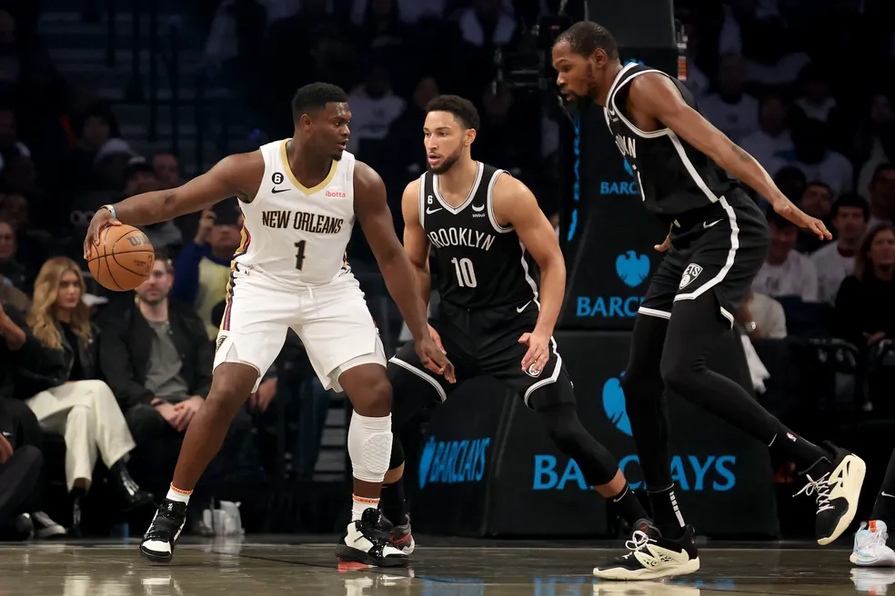
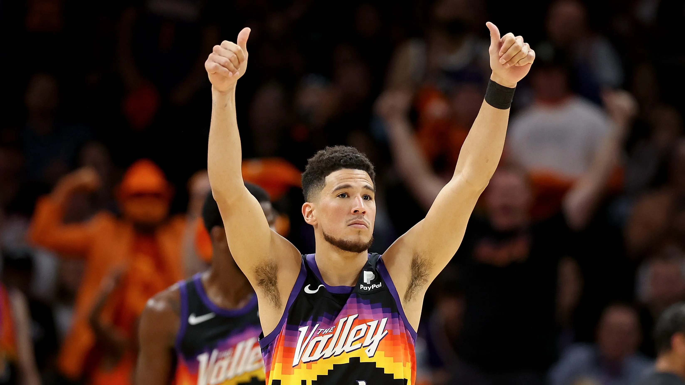
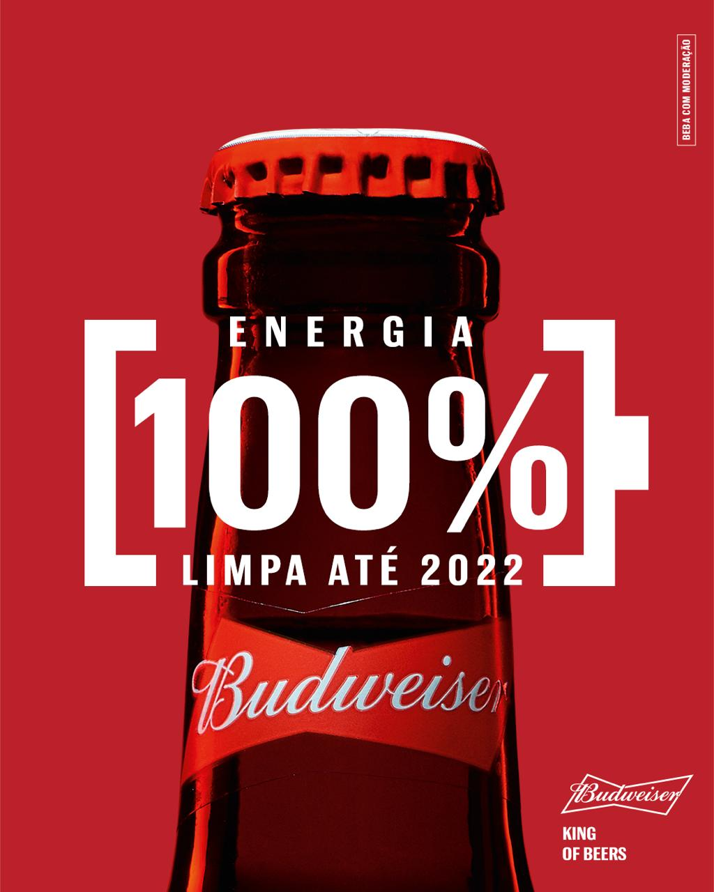
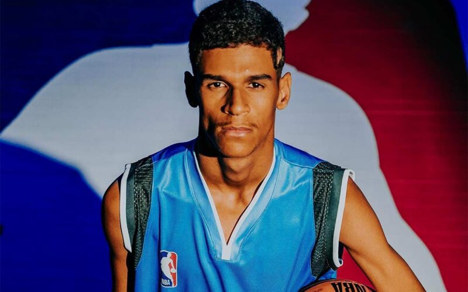
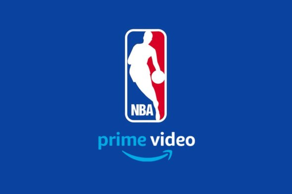
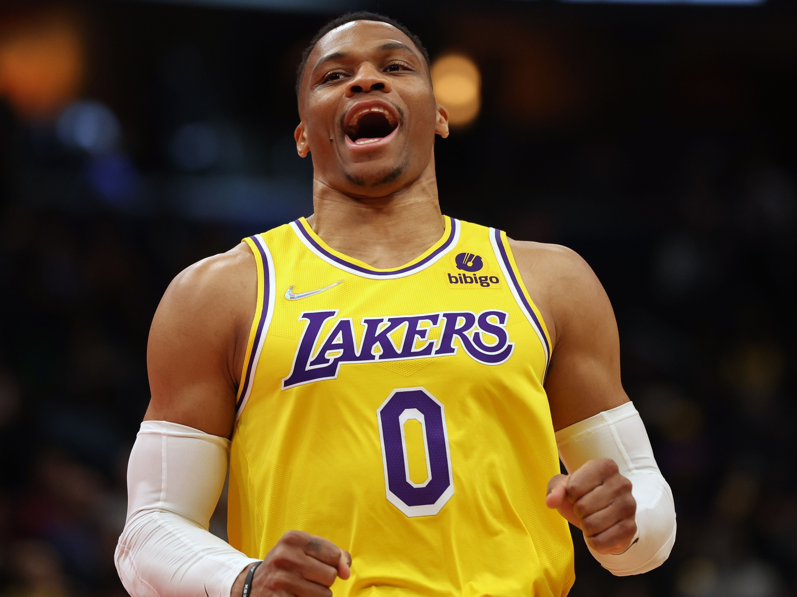
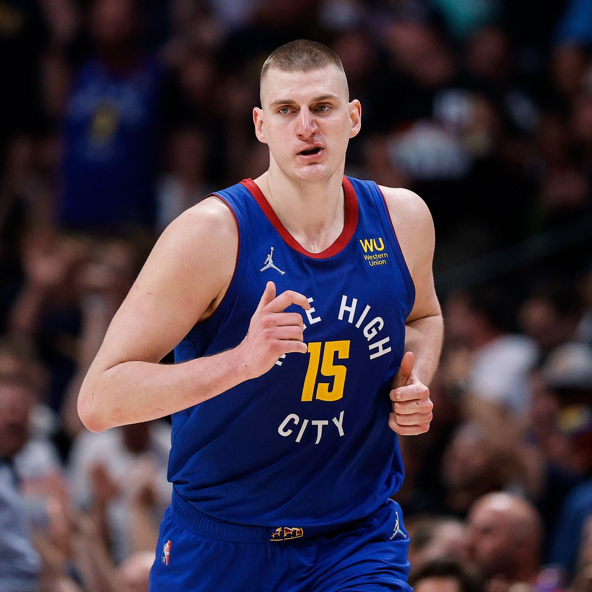
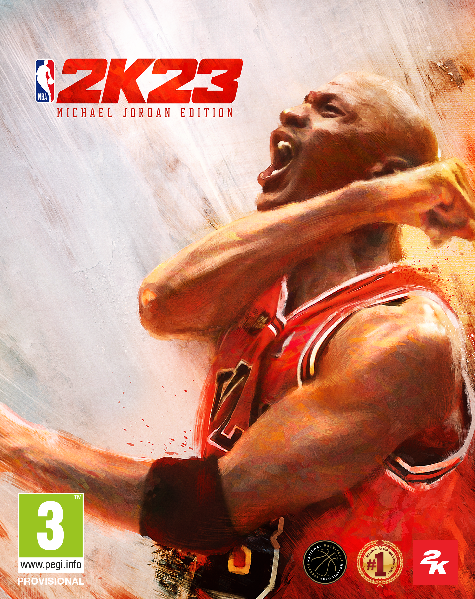

Notícias da Semana

Zion retorna, e Pelicans atropelam o Brooklyn Nets.
CJ McCollum brilha em Nova York; Kevin Durant faz 32 pontos, mas Ben Simmons volta às quadras em ritmo lento.

Devin Booker comanda e Suns vira sobre Mavs.
Rodada contou ainda com triunfos de Hawks, Jazz, Timberwolves, Grizzlies, Bulls, Blazers, Hornets, Wizards, Pistons, Pelicans e Raptors.


Warriors vencem Lakers; Celtics superam 76ers.
Stephen Curry foi o destaque em São Francisco; em Boston, Jayson Tatum e Jaylen Brown somaram 70 pontos.

NBA na Amazon Prime é marcada por problemas.
A estreia da NBA no Prime Video foi marcada por muitos problemas técnicos nas transmissões das partidas na plataforma de streaming.


Russell Westbrook responde a críticas de Charles Barkley.
Russell Westbrook começou sua segunda temporada com o Lakers na noite desta terça-feira, jogando contra o atual campeão da NBA, o Golden State Warriors.

Nikola Jokic começa busca pelo terceiro prêmio de MVP.
Pivô sérvio do Denver Nuggets vai atrás de feito que nem Michael Jordan e Lebron James conseguiram a partir desta quarta-feira.
